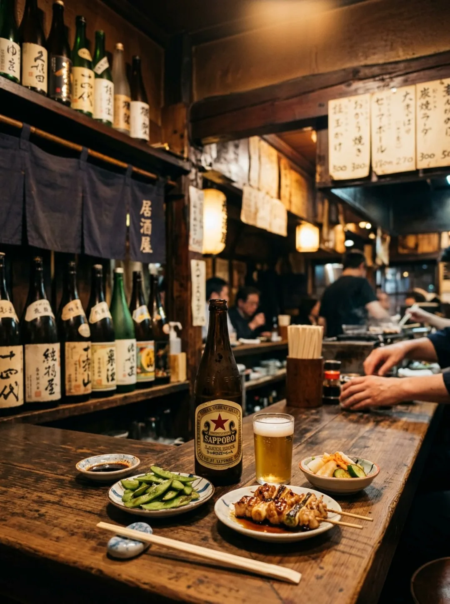

Sakaba
丸子
Fukui
中央の酒場

4.6★★★★★
Googleの口コミ 39件
まるっと一日
おつかれさま
丸子で一杯。
中央の「酒場 丸子」。
高い評価をいただいている、気取らずくつろげる酒場です。
Feature
いつ来ても、ほっとする酒場。
中央の「酒場 丸子」。高い評価をいただいている、気取らずくつろげる酒場です。中央の街角にある、あたたかい酒場です。いつ来ても「おかえり」と言える、そんなお店でありたいと思っています。
「今夜も、
丸子で一杯。」── 酒場 丸子

01丸子のおすすめ。今日いちばんの一品を。（写真はイメージです）

Menu
品書き
- 1
丸子のおすすめ
今日いちばんの一品を。
- 2
季節のつまみ
旬の食材で、お酒に合う一皿。
- 3
〆の一品
最後まで楽しめる〆も。
※ 写真と内容はイメージです。実際のお品書きに差し替えます。
Scene
こんなときに、どうぞ。

01仕事帰りに
カウンターでほっと一杯。

02気の合う仲間と
にぎやかな夜に。

03ひとりでも
気軽に立ち寄れます。
酒場 丸子
酒場 丸子 ／ 居酒屋
- Address
- 〒910-0006 福井県福井市中央１丁目１６−5番地
- Tel
- 090-9448-7439
- Open
- 〔要確認〕
- Closed
- 〔要確認〕

今日の終わりに、
丸子で一杯。Sakaba